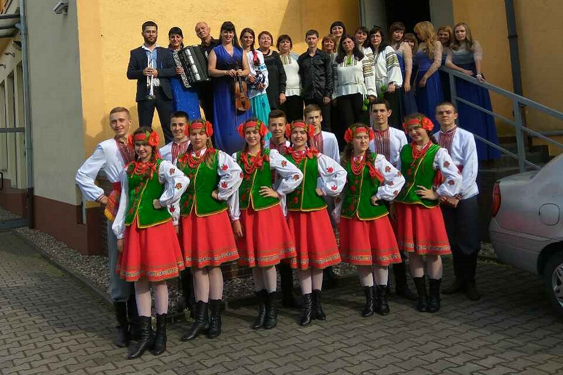

Letnie emocje
Do Wrocławia przyjechaliśmy z programem występów 2 zespołów działających przy Domu Polskim w Barze.
A były to chór kameralny „Cantica anima” oraz zespół taneczno-folklorystyczny „Aksamitki”. Występy odbywały się w kilku miejscach w ramach „Dni Kultury Kresowej” we Wrocławiu.
Jesteśmy pod wrażeniem odbioru naszych występów przez publiczność wrocławską. Świetny kontakt z widownią dodawał nam otuchy i sprzyjał bardziej emocjonalnemu wykonaniu programu artystycznego.